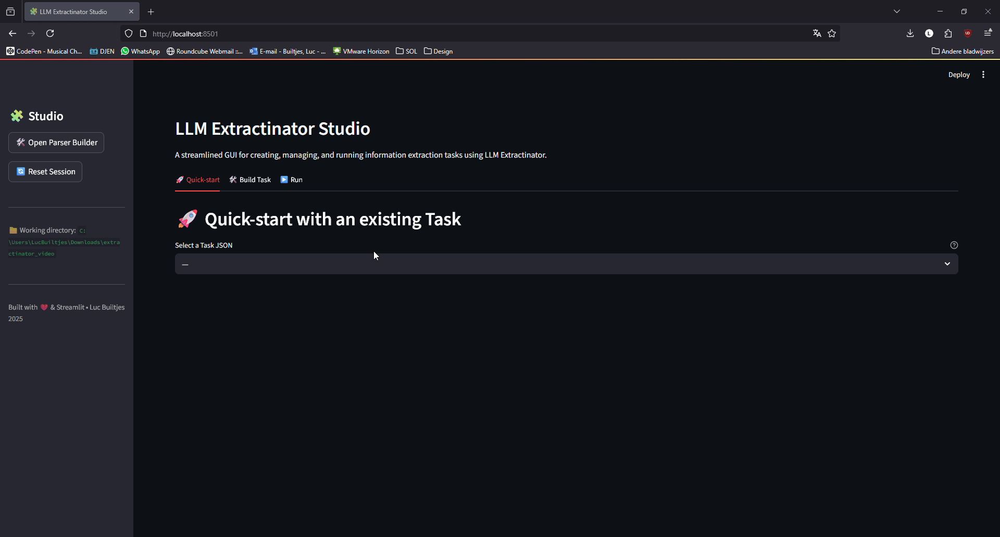

The Studio¶
The Studio is the interactive, no-code way to use LLM Extractinator. Launch it with:
launch-extractinator
This starts a Streamlit app, usually at http://localhost:8501.

Everything you do in the Studio produces the same task files and output as the CLI — so you can prototype here, then run the exact same task unattended on a server.
Layout at a glance¶
The Studio follows a straight-line flow, left to right:
Task → Run → Results
A status strip under the header always shows where you stand — the current Task, the Model, and the Latest run — so you never lose track of state as you move between tabs. The dots turn teal once each is set.
The working directory (where it reads data/, tasks/, and writes output/) is shown in the sidebar, along with a Reset session button that clears your current selections.
1. Task¶
This is where you get a task ready to run. A toggle at the top offers two paths:
Use an existing task¶
Pick any Task*.json from your tasks/ folder. The Studio shows a friendly summary — description, dataset, text column, output schema, and examples — with the raw JSON tucked into an expander. Click ✅ Use this task to mark it ready and unlock the Run tab.
Build a new task¶
A three-step form:
- Inputs — choose (or upload) your dataset, pick the text column, choose or build the output schema, and optionally add an examples file.
- Describe — write the plain-language task description and confirm the auto-suggested Task ID.
- Review & save — check the summary and click 💾 Save task. It's written to
tasks/Task<NNN>.jsonand marked ready.
The Output Schema Builder¶
Next to Output schema, 🛠️ Build new opens the schema builder in a pop-up. Add fields (types, collections, Literals, nested models), preview the generated Python, then Save & use this schema — it lands in tasks/parsers/ and is selected for your task automatically. You can also select a previously built schema, or upload your own .py.
The builder is also available on its own via build-parser. See Output schema for the details of what you can build.
2. Run¶
Available once a task is ready. Here you choose how to run it:
- Model — pick from the models installed in your local Ollama, or type any Ollama model name (it'll be pulled on first use). Reasoning models are auto-detected and the Reasoning model toggle is set for you.
- Ollama server URL (optional) — leave blank to let the tool manage its own local Ollama, or enter a URL to connect to an already-running instance — Ollama on your host, or a shared GPU server. This is the field you use when running the container without its own Ollama (see Connecting to an existing Ollama instance). Common values are
http://host.docker.internal:11434(host machine) orhttp://<server-ip>:11434(remote). The model must already be pulled on that server. See also--ollama_host. - Advanced flags — an expander for run behaviour (repeat runs, seed, verbose), prompting (few-shot count, context-length strategy), and sampling (temperature, top-k/top-p, max tokens).
Click 🚀 Run. The exact CLI command is shown, then the log streams live. When it finishes you get a success summary with record counts and a pointer straight to Results.
3. Results¶
Explore the output of any run — newest first, with the run you just finished auto-selected.
- Summary metrics — total records, successes, and failures at a glance.
- Filters — show all / successes / failures, plus a free-text search across every field.
- Records table — a compact overview; extracted list/dict fields are summarised (e.g. "3 items").
- Detail view — select a row to see the full record side by side: input/metadata on the left, extracted fields on the right.
What the records actually contain is covered in Understanding output.
Why use the Studio¶
- You don't have to remember CLI flags — it guides you through the required fields.
- You can build and swap output schemas quickly and see results without leaving the app.
- It's the fastest way to iterate on a task before committing it to an unattended CLI run.
Once you're happy, run the same task from the CLI on a workstation or server.